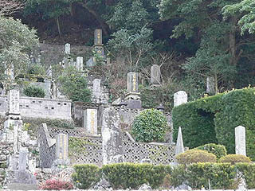
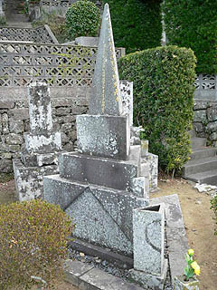
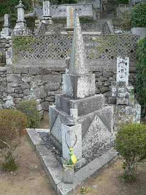
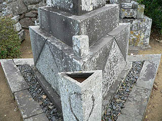
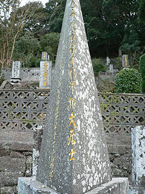
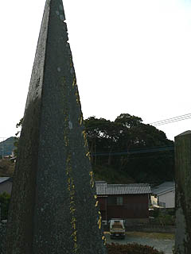
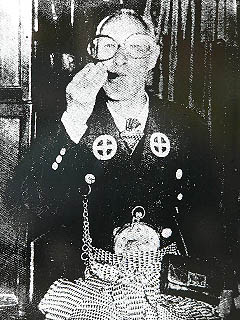
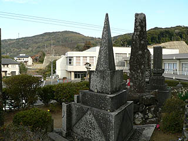

三角形の墓/長崎県江向町
佐世保と平戸の間に、千灯籠という夏祭りで有名な江迎町という町がある。
中心部には町のシンボルのように30メートル近い巨大な三角に組まれた鉄骨のやぐらが建っている。このやぐらに提灯を掲げて千灯籠とするのだ。そんな巨大三角形が建つ江迎にもうひとつ、三角なモノがある。
それが三角形の墓である。千灯籠のやぐらに程近い墓地にこの墓はある。
いかにも長崎らしい傾斜地につくられた墓地の中でも一際異彩を放ちまくり。

これが三角形の墓だ。
この墓石がつくられたのは昭和30年代。今でこそ三角の墓もないことはないが、この時期にこの墓はかなり画期的だと思う。
 
墓は一番上の竿石は三角錐、下の台石は三角柱で構成されている。墓地の敷地自体も三角。
鋭角の竿石は天を突くかのごとし。
4段組の一番下の台石は三角形の石を組み合わせて三角柱を構成しているというこだわりよう。

水鉢や香炉まで三角形。敷地も三角形。石工も大変だった事だろう。
 
竿石の正面の部分に戒名が刻まれている。丁度三角錐の辺に彫られているので見にくい事この上ない。
戒名を刻んだエッジがはじけとびそうな緊張感がある。
ちなみに墓石の刻字が金色なのは長崎では標準装備です。
さて、この三角の墓、どなたのものかというと・・・

・・・こんな人です。
このお方、名を徳田真寿という。
幕末に生まれた徳田氏は別名、頓痴奇屋とも呼ばれ、全国でも有名な天下の奇人であったという。
紋付背広に大きな眼鏡に袴姿がトレードマークでいつも人を笑わせるのをモットーとしていた御仁である。
氏は旅行の際一銭銅貨を袋に詰め天秤棒でかついで歩き、汽車の運賃や買い物をすべて一銭銅貨で支払うという、傍迷惑としか思えない逸話を持つ。ウケるためなら何でもしまっせー、的なキャラだったようである。また、古銭・切手収集、絵画のコレクターとしても有名で、古銭は2〜3千種、切手は2万枚以上は蒐集していたという。
・・・いいですねえ、天下の奇人。
今、奇人といってもこういう類いの奇人ってあんまりいないですからねえ。どっちかというと延々路上に数字を書き続けるとか、ひたすら怪文書を書き続けるとか、そういう精神的にドメスティックな奇人が主流をしめているような気がする。
今だったら、テレビの取材なんかガンガン受けちゃって、毎回同じ笑いどころでレポーターに驚かれたりするタイプ。で、本人も若干変わっているのを自覚していたりなんかして。・・・そーんな自覚的奇人のオーラが漂っている。
そんな奇人っぷりの極みが三角形への偏愛。
家具、調度品、食器、果ては寝具まで三角形のモノをつくらせるという極端な生活っぷり。
その最終作品がこの三角の墓というわけなのである。

「三角形は円に通じる、三角形を合わせると円になる。円は時間、空間、無限の発展性を表し、安定性もあり、一円融合の精神ともつながる。三角形のお膳をつなぎ合わせると丸い車座となる。みんな輪になって喜びをともにする」という徳田氏の思想には単なる奇人というだけでは語り尽くせない深遠なる思想が見えてくるような気がする。
ただし、三角の墓を見たからといって笑えるか、というとチトつらいような・・・
どっちかっつーと駅員に一銭銅貨を数えさせたり職人泣かせの無茶な三角の生活用品を作らせたりといった世間に角をたててる生き様をそのまま表現したような墓にも見えるんですけど・・・で、そんな精神的エッジがギンギンに立ってる人達が集まって丸く納まるか、というとどうなんでしょう。
三角づくしの生活といえば思い出されるのが新潟の三楽亭。とある豪農が明治24年につくらせた珍建築だ。建物の平面が正三角形で、畳や柱も全て三角か菱形で構成されているという。
この建物を徳田翁は知っていたのであろうか。知ってたら自分も作ってたかもね。
氏は若い頃に苦労した経験から明るく楽しく生きるという生き方を会得したという。ある意味、真剣に笑いを追求した結果の三角の墓だったのかもしれない。
だとしたら、のほほ〜んと生きてるアタシに氏の生き様の何をコメント出来ましょう。
2005.2.
珍寺大道場 HOME